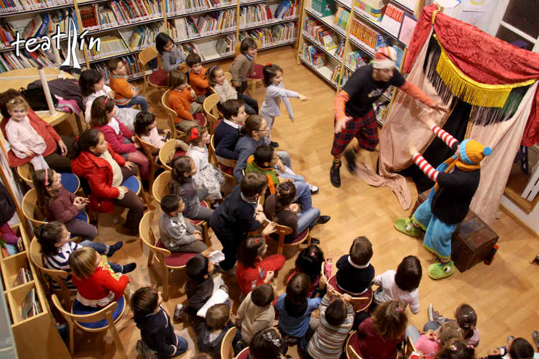
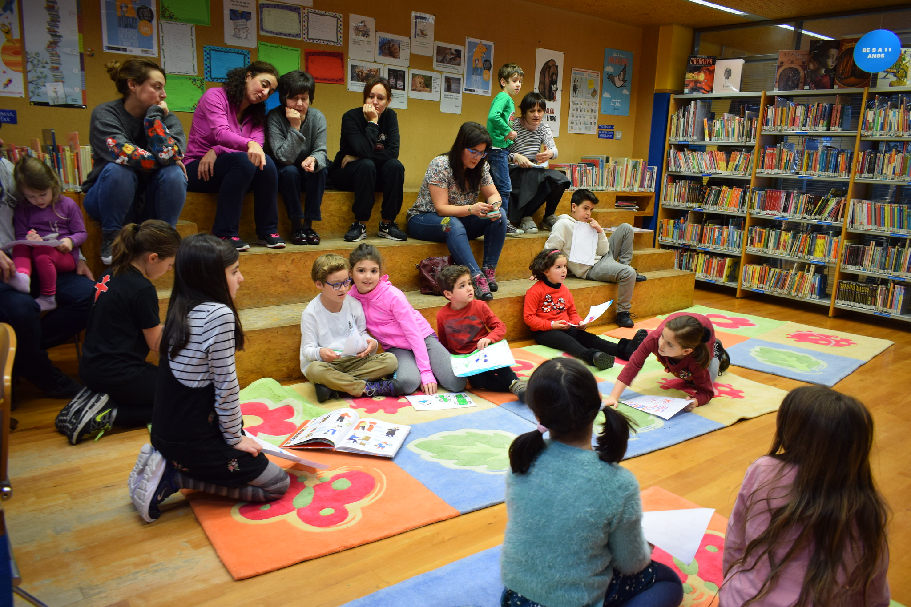
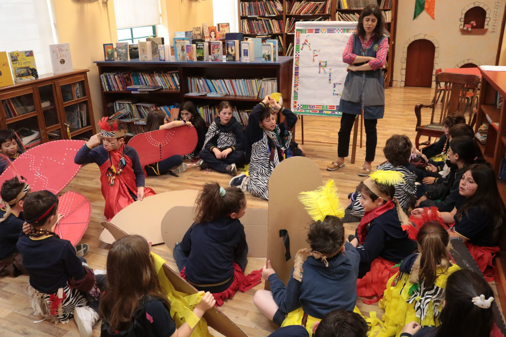

Biblioteca Pública Comillas
Libros Destacados
| Título | Autor | Género |
|---|---|---|
| Cien años de soledad | Gabriel García Márquez | Realismo mágico |
| Don Quijote de la Mancha | Miguel de Cervantes | Novela |
| La Celestina | Fernando de Rojas | Tragicomedia |
| La casa de Bernarda Alba | Federico García Lorca | Teatro |
Galería de Eventos


